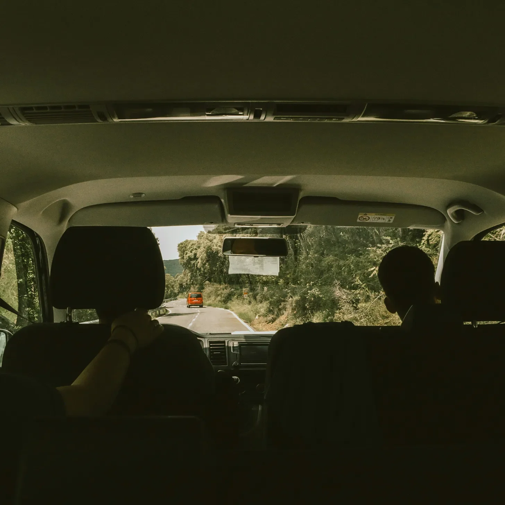

마브는 핸들을 꽉 잡았고, 폭발음이 차를 흔들 때마다 그의 손가락 마디가 하얗게 변했다. 쾅. 쾅. 쾅. 폭발음은 점점 더 가까워졌다.
[Marv gripped the steering wheel, his knuckles white as the explosions rocked the car. Boom. Boom. Boom. Each one closer than the last.]
“우리가 공격받고 있어요!” 뒷좌석에서 돌로레스가 비명을 질렀고, 그녀의 화려한 비하이브 헤어스타일이 폭발음에 맞춰 떨렸다.
[“We’re under attack!” shrieked Dolores from the backseat, her elaborate beehive hairdo quivering with each blast.]
조수석에 앉은 행크가 창밖을 들여다보았다. “아무것도 안 보이는데. 연기도 없고 불도 없어. 돌, 네 상상 아냐?”
[Hank, riding shotgun, peered out the window. “I don’t see nothin’. No smoke, no fire. You sure it ain’t just your imagination, Dol?”]
쾅. 이번 폭발음에 창문이 덜컥거렸다.
[Boom. This one rattled the windows]
마브가 급하게 핸들을 돌려 우편함을 간신히 피했다. “맙소사, 도대체 뭐가—”
[Marv swerved, nearly clipping a mailbox. “Jeez Louise, what in tarnation—”]
그때 악취가 코를 찔렀다. 마치 썩은 달걀과 일주일 된 양배추가 생선 시장 뒤 쓰레기통에서 아이를 낳은 것 같은 냄새였다.
[That’s when the smell hit. Like rotten eggs and week-old cabbage had a baby in a dumpster behind a fish market.]
행크의 눈이 커졌다. 그는 마브를 향해 돌아봤고, 마브 역시 이미 공포에 질린 채 그를 바라보고 있었다.
[Hank’s eyes went wide. He turned to Marv, who was already staring back at him in horror.]
그들은 동시에 천천히 뒷좌석을 향해 고개를 돌렸다.
[In unison, they slowly pivoted to face the backseat.]
그곳에는 돌로레스가 앉아 있었고, 그녀의 얼굴에는 부끄러움과 안도감이 뒤섞여 있었다. “저… 점심에 콩을 먹었어요.”
[There sat Dolores, her face a mask of shame and relief. “I, uh… I had beans for lunch.”]
마브는 창문을 내리며 신선한 공기를 들이마셨다. “세상에나, 돌로레스! 그게 무슨 콩이었길래? 무기급이라도 되나?”
[Marv rolled down the windows, gasping for fresh air. “Sweet mother of mercy, Dolores! What kind of beans were those? Weapons-grade?”]
돌로레스가 분개하며 코를 찡그렸다. “내 잘못이 아니에요. 퀘켄부시 박사가 처방해준 새 다이어트 약 때문이에요. 그가 ‘가스성 부작용'이 있을 수 있다고 했죠.”
[Dolores sniffed indignantly. “It’s not my fault. It’s that new diet pill Dr. Quackenbush prescribed. He said it might have some 'gaseous side effects.’”]
행크가 킥킥거렸다가 또 다른 독한 냄새를 들이마시자 곧바로 후회했다. “가스성 부작용? 차라리 화학전이라고 하지!”
[Hank chuckled, then immediately regretted it as he inhaled another noxious cloud. “Gaseous side effects? More like chemical warfare!”]
또 다른 '폭발'이 좁은 공간을 가로질러 차를 흔들었다. 이번에는 돌로레스도 숨기려 하지 않았다. 그녀는 그저 패배한 듯 한숨을 쉬었다.
[The car swerved again as another “explosion” ripped through the confined space. This time, Dolores didn’t even try to hide it. She just sighed, defeated.]
“미안해요, 여러분들. 차를 세워야 할 것 같아요.”
[“I’m sorry, boys. I think we’d better pull over.”]
마브는 눈물을 글썽이며 고개를 끄덕였다. 그는 앞에 있는 주유소를 발견하고 곧장 그쪽으로 향했다.
[Marv nodded, eyes watering. He spotted a gas station up ahead and made a beeline for it.]
그들이 주유소에 들어서자 활기찬 주유원이 다가왔다. “주유하시겠어요?”
[As they pulled in, a chipper attendant approached. “Fill 'er up?”]
마브가 고개를 저었다. “아니, 그냥… 차 안 환기 좀 시키면 돼요.”
[Marv shook his head. “Nah, we just need to… air out the car.”]
주유원이 몸을 기울여 안을 들여다보다가 격렬하게 뒤로 물러섰다. “세상에! 거기서 뭐가 죽었어요?”
[The attendant leaned in, then recoiled violently. “Holy smokes! What died in there?”]
이제 비하이브 헤어스타일이 약간 흐트러진 돌로레스가 뒷좌석에서 내렸다. “아무것도 죽지 않았어요, 젊은이. 그냥 의학적 증상일 뿐이에요.”
[Dolores, her beehive now slightly deflated, climbed out of the backseat. “Nothing died, young man. It’s just a medical condition.”]
주유원이 두 손을 들며 물러섰다. “아주머니, 의사보다는 엑소시스트가 필요하실 것 같은데요.”
[The attendant backed away, hands raised. “Ma'am, I think you need an exorcist, not a doctor.”]
마브와 행크가 신선한 공기를 마시며 감사한 마음으로 차에서 내리는 동안, 돌로레스는 배려 없는 남자들과 돌팔이 의사들에 대해 투덜거리며 화장실 쪽으로 뒤뚱거리며 걸어갔다.
[As Marv and Hank exited the vehicle, grateful for the fresh air, Dolores waddled towards the restroom, muttering about inconsiderate men and quack doctors.]
행크가 담배에 불을 붙였다가 곧 생각을 고쳐먹고 재빨리 끄며 말했다. “저기 다시 들어가도 안전할까?”
[Hank lit a cigarette, then thought better of it and quickly stubbed it out. “You think it’s safe to get back in there?”]
마브가 어깨를 으쓱했다. “10분만 더 기다려보자. 그리고 가스 마스크라도 사야 할 것 같아.”
[Marv shrugged. “Give it another ten minutes. And maybe invest in some gas masks.”]
그들은 화장실에서 나오는 돌로레스를 지켜보았다. 그녀의 얼굴색이 조금 나아 보였다. 돌로레스가 다가와 입을 열려는 순간—
[They watched as Dolores emerged from the restroom, looking slightly less green. She approached them, opening her mouth to speak, when suddenly—]
쾅.
[BOOM.]
주유소 직원이 그 자리에서 기절해버렸다.
[The gas station attendant fainted dead away.]
돌로레스가 힘없이 미소 지었다. “오늘 저녁에 멕시코 음식 어때요?”
[Dolores smiled weakly. “Anyone up for Mexican tonight?”]